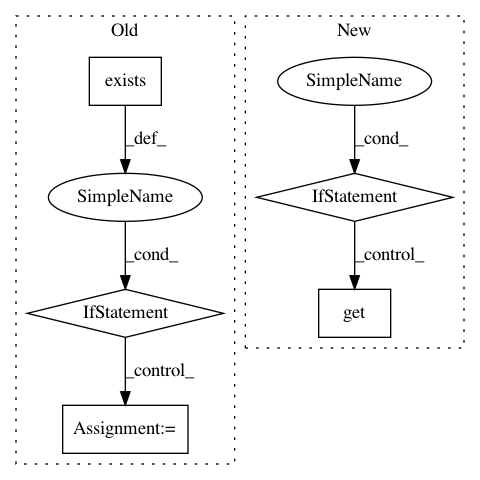

8ed42a1c2781d28f699924d9a4b81785d55a624e,PyInstaller/depend/bindepend.py,,findLibrary,#Any#,712
Before Change
// TODO Look for ldconfig in /usr/sbin/ldconfig. /sbin is deprecated
// in recent linux distributions.
// Solaris does not have /sbin/ldconfig. Just check if this file exists.
if lib is None and os.path.exists("/sbin/ldconfig"):
expr = r"/[^\(\)\s]*%s\.[^\(\)\s]*" % re.escape(name)
if is_freebsd:
// This has a slightly different format than on linux, but the
// regex still works.
m = re.search(expr, compat.exec_command("/sbin/ldconfig", "-r"))
else:
m = re.search(expr, compat.exec_command("/sbin/ldconfig", "-p"))
if m:
lib = m.group(0)
// Look in the known safe paths.
if lib is None:
// Architecture independent locations.
paths = ["/lib", "/usr/lib"]
// Architecture dependent locations.
After Change
// Look in /etc/ld.so.cache
// Solaris does not have /sbin/ldconfig. Just check if this file exists.
if lib is None:
PyInstaller.depend.utils.load_ldconfig_cache()
lib = PyInstaller.depend.utils.LDCONFIG_CACHE.get(name)
if lib:
assert os.path.isfile(lib)
// Look in the known safe paths.
if lib is None:
// Architecture independent locations.
paths = ["/lib", "/usr/lib"]
// Architecture dependent locations.
In pattern: SUPERPATTERN
Frequency: 3
Non-data size: 5
Instances
Project Name: pyinstaller/pyinstaller
Commit Name: 8ed42a1c2781d28f699924d9a4b81785d55a624e
Time: 2015-11-20
Author: h.goebel@crazy-compilers.com
File Name: PyInstaller/depend/bindepend.py
Class Name:
Method Name: findLibrary
Project Name: tensorflow/datasets
Commit Name: db887bdd5236d8d34f0dd3625c7f1026e511b640
Time: 2020-04-16
Author: cs17btech11040@iith.ac.in
File Name: tensorflow_datasets/core/download/kaggle.py
Class Name: KaggleCompetitionDownloader
Method Name: download_file
Project Name: polyaxon/polyaxon
Commit Name: f79c98d83b424892389220bcbb158ea8cca32d18
Time: 2019-07-03
Author: mouradmourafiq@gmail.com
File Name: polyaxon/registry/registry_context.py
Class Name:
Method Name: get_registry_context